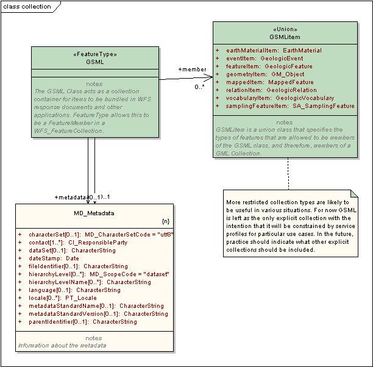

Package GeoSciML/Collection
The GeoSciML Collection package contains facade classes that facilitate the structuring of WFS response documents and other application uses.
Class Summary |
|
| GSML | The GSML Class acts as a collection container for items to be bundled in WFS response documents and other applications. FeatureType allows this to be a FeatureMember in a WFS_FeatureCollection. |
| GSMLitem | GSMLitem is a union class that specifies the types of features that are allowed to be members of the GSML class, and therefore, members of a GML Collection. |
UML Diagram: Summary diagram: GSML collection
